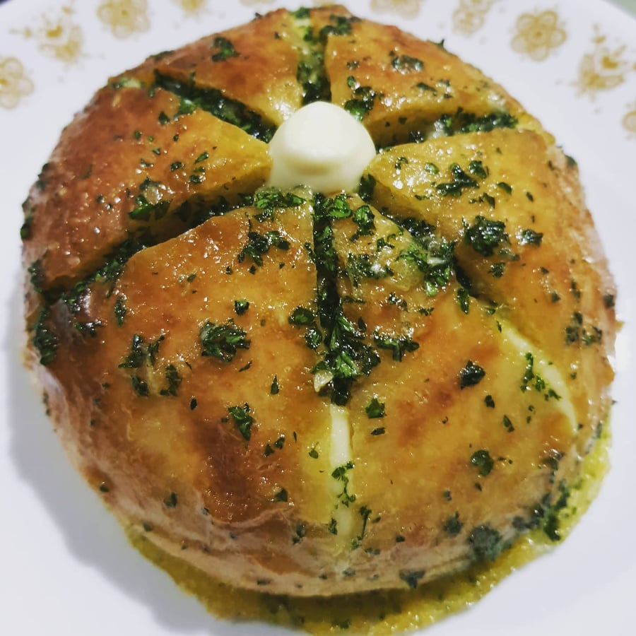
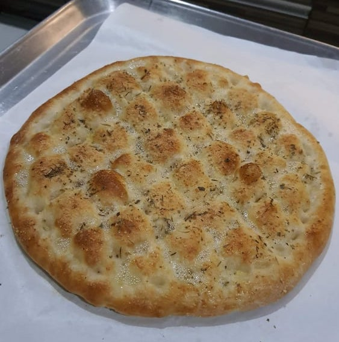
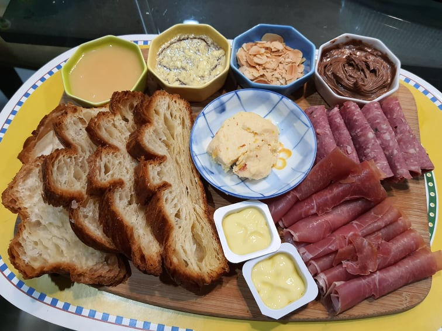

Digital Espresso is an cafe started in 2021 by Frances Tan. She is a coffee enthusiast, who is very passionate about the different coffee styles and brewing techniques. The coffee being brewed in this cafe comes from rich and natural coffee beans . Other ingredients used in this cafe are hand-picked for extra creamy and scrumptious taste . The cafe is on a soft-opening, with a website to cater to people who prefer to order coffee online due to the pandemic.
  The cafe also envisions to expand its menu to snacks that comes along with coffee. These will be home-made pasteries by Faith Tan, which will come from different cuisines. Above are pictures of some food examples Digital Espresso is planning to release.
Please do not forget to check out Digital Espresso's social media accounts!
Facebook: facebook.com/digitalespresso
Instagram: @digitalespresso